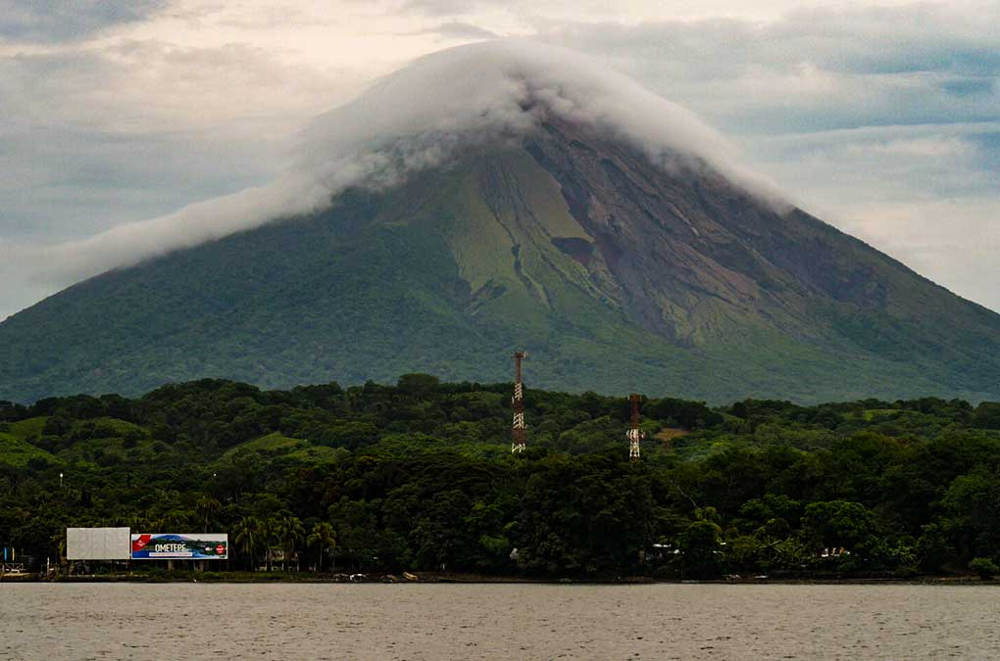
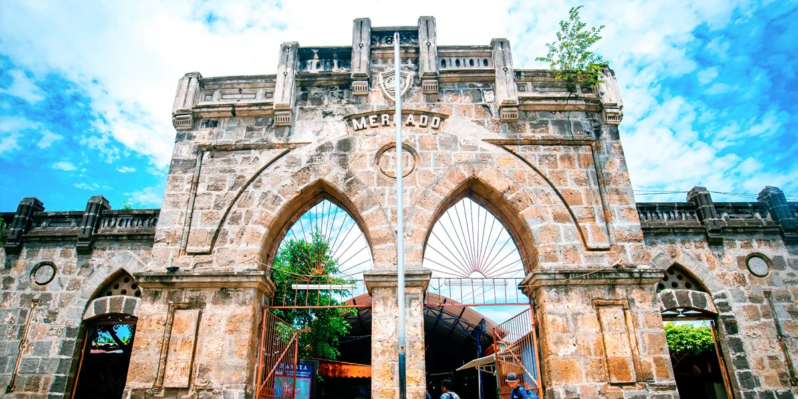
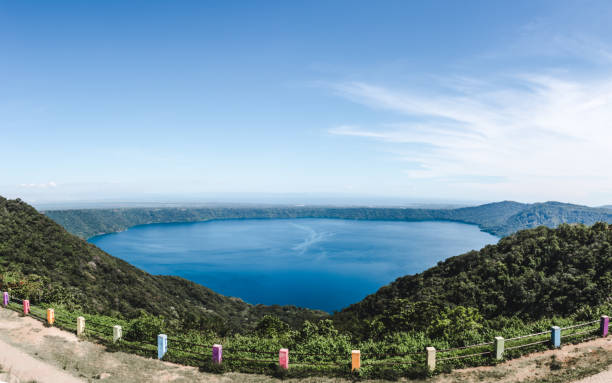

Masaya es conocida como la Ciudad de las Flores y es uno de los departamentos más visitados de Nicaragua por su riqueza cultural, sus artesanías y sus paisajes naturales.

Es uno de los volcanes activos más visitados de Centroamérica y una de las principales atracciones turísticas del país.

Es un lugar ideal para comprar recuerdos, ropa, hamacas y productos elaborados por artesanos nicaragüenses.

Una reserva natural perfecta para nadar, descansar y disfrutar de la naturaleza.